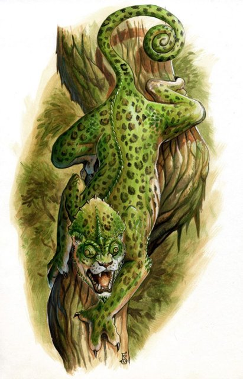
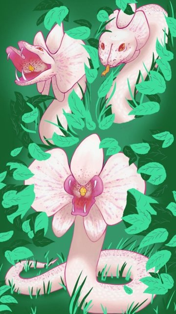

Diário de Campanha · Brutal RPG
A Excursão
Uma visita ao Zoológico Municipal de Sorocaba. Atrás do que está aberto ao público, o Setor B-7 guarda o Projeto Síntese.
Links da campanha
Arquivos do Setor B-7
AtençãoOs documentos abaixo, e o resto desta página, revelam segredos da campanha. Jogadores: leiam só quando o mestre liberar.
-
Experimento 04
Relatório ZSR-09 · H-04 “Calyptra”
Dra. Fernanda Alcântara · 2023
Onça-pintada com camaleão-de-véu. Experimento encerrado: o espécime morreu após 200 dias.
Abrir ↓ -
Experimento 07
Relatório ZSR-09 · H-07 “Florescente”
Dr. Caio Drummond · 2024
Jararaca com orquídea. O primeiro híbrido de animal e planta que deu certo.
Abrir ↓ -
Experimento 09
Relatório ZSR-09 · H-09 “Quimera”
Prof. Dr. Renato Meireles · 2024
Onça, ariranha e caninana num só corpo. Nível máximo de sigilo, espécime ativo.
Abrir ↓ -
Uso interno
Reunião privada · Ordem de compra OC-2023/0091
Dir. Rogério Vasconcelos · 2023
R$ 105.535,00 para uma noite no Setor B. Sem nota fiscal e com ordem de destruir os documentos.
Abrir ↓
Projeto Síntese: os espécimes
Pesquisa de fusão genética entre espécies, feita em segredo no laboratório do zoológico. Estes são os três híbridos documentados nos arquivos.
-

H-04 · Calyptra
FalecidoA equipe queria dar à onça a camuflagem do camaleão. O vetor passou do tecido-alvo, atingiu nervos e músculos, e o animal perdeu a coordenação até morrer.
- Bases
- Onça-pintada × camaleão-de-véu
- Período
- 03/03/2023 a 19/09/2023
- Causa
- Falência múltipla de órgãos
-

H-07 · Florescente
AtivoEscamas violeta que imitam pétalas, aroma de orquídea e brilho sob luz ultravioleta. É saudável e estável, e atrai mariposas mesmo dentro do laboratório.
- Bases
- Jararaca × orquídea Cattleya labiata
- Período
- 12/01/2024 a 18/09/2024
- Local
- Recinto R-02, Setor B-7
-
H-09 · Quimera (“Tríade”)
Ativo · risco laranjaDuas cabeças e uma cauda de serpente, 4,2 m e 127 kg. Cada parte do corpo reage a um cão como a uma ameaça diferente, e não há como conciliar os instintos. Por isso o contato com outros animais foi suspenso.
- Bases
- Onça-pintada, ariranha-gigante e caninana
- Nascimento
- 03/08/2022
- Local
- Recinto R-01, Setor B-7, acesso biométrico
Cronologia
Começa o Experimento 09 (Quimera).
Nasce o H-09.
Começa o Experimento 04 (Calyptra).
Calyptra morre no dia 200.
O diretor Rogério Vasconcelos autoriza a ordem de compra para uma reunião privada.
Reunião privada no Setor B, Sala 03.
Começa o Experimento 07 (Florescente).
Florescente completa 250 dias, saudável e estável.
Relatório do H-09: o risco de comportamento sobe para nível laranja.
Quem aparece nos arquivos
- Rogério Vasconcelos
- Diretor-geral do zoológico. Autorizou a reunião privada.
- Prof. Dr. Renato Meireles
- Genética experimental. Supervisiona o Projeto Síntese e assina o relatório da Quimera.
- Dra. Fernanda Alcântara
- Biologia molecular. Participa dos experimentos 04, 07 e 09.
- Dr. Caio Drummond
- Botânica molecular. Responsável pelo H-07.
- Dr. Hélio Saraiva
- Neurobiologia. Autor do laudo sobre os instintos conflitantes do H-09.
- Dra. Camila Resende
- Veterinária do experimento 04.
A Terra Invertida ·